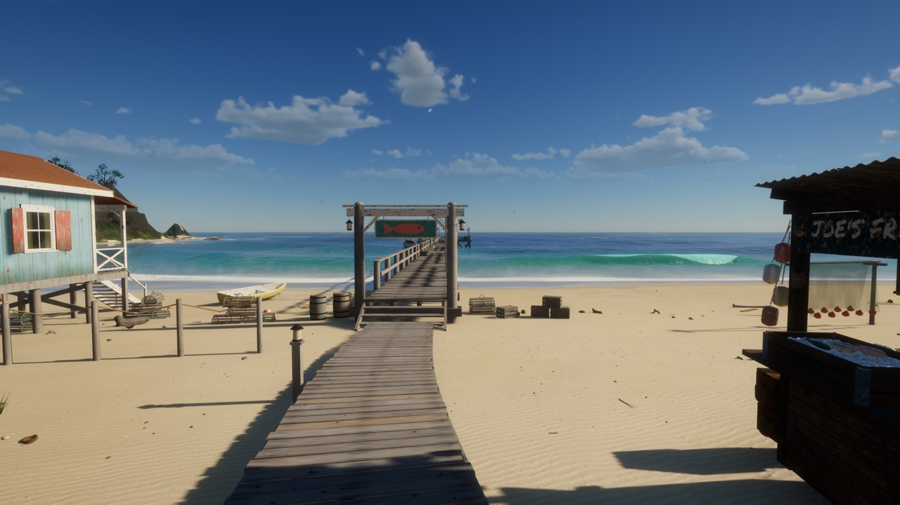
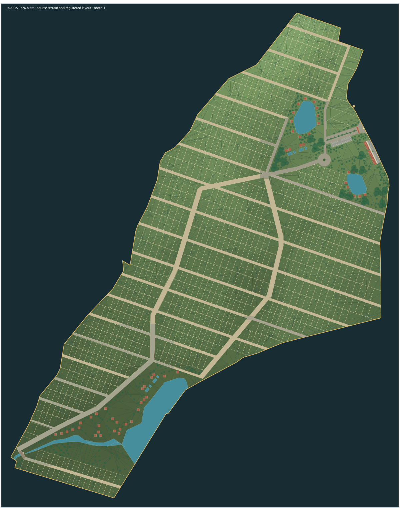

The original island
Tidewater
Take the boat out, explore the coast, fish the reef and return to the village before dark.
Open TidewaterExplore Tidewater’s island or step into Rocha. Open either map directly in your browser.

Take the boat out, explore the coast, fish the reef and return to the village before dark.
Open Tidewater
Explore the terrain, roads, lakes, homes and infrastructure, with the full-size Azimut Grande Trideck on the big lake.
Open RochaView Luz de Mar at the entrance lake
Walk aboard Luz de Mar via the gangway
See the exterior refit before and after